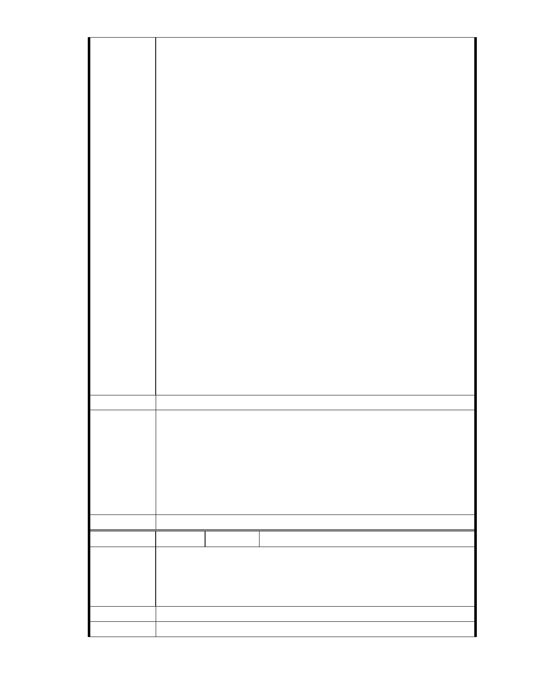

一直以來，慈濟致力於環保推動不遺餘力已經四十五年，也備受推崇，
但這次慈濟要在台北市內湖設立一個兼具環境保護與社會福利的計畫
案，卻遭到質疑破壞保護區。 綜合看來，居民所關心的有以下三項：
第一：居民所關心防洪排水問題。自民國九十一年來，慈濟便進行縝密
的評估，也委託台大水工所教授群作過「水理模擬」測試，證實慈濟園
區開發後將承擔大湖集水區二一○○立方公尺的集水量，對大湖地區排
水之現況將有很大的助益。
第二：順向坡的問題。事實上，根據國家中央地調所公告結果，慈濟內
湖基地周圍並沒有斷層及礦坑。民國八十七年慈濟委託台大游以德等多
位教授，對環境進行綜合評估，報告中便以說明園區利用範圍內並不存
在潛在順向坡的問題。
第三：居民擔心此後將大開保護區變更之方便大門。事實上，每一個案
件都有其特殊性，若都能拿出合乎事實的分析加以理性的討論，並有效
的配合公權力加以執行，大開保護區變更之方便大門之疑慮其實並不存
在。
建議辦法
我們全家都是郝巿長的支持者，這次看到市長能順利連任，實在非常高
興。高興在於反對聲音雖然大，但多數人終究還是支持默默耕耘，腳踏
實地努力做事的人。因此也相信巿長能摒除雜音，拿出專業與公權力，
支持一向默默做事，致力維護生態與人文平衡發展的慈濟推動這個兼具
環境保護與社會福利的計畫案。
一、本案申請範圍於慈濟購得前已遭非法填土，實不具保護區之功能，
今申請單位欲興辦社會福利事業，故依法辦理都市計畫變程序；目
市府說明
前申請方案較先前方案已大幅降低開發強度、調整使用項目並承諾
大面積滯洪設施等回饋事項，顯示申請單位欲改善現況之誠意。
二、相關陳情意見將納入本案審查人民意見，依法定程序辦理。
三、後續審理程序將要求申請人加強與在地區民、社會大眾，就基地現
況、規劃方案及環境助益作為等方面加強溝通。
委 員 會 決 議 同編號 1。
編號
陳情理由
建議辦法
76 陳情人 市長信箱（ MA201012060119 ）
針對慈濟內湖開發案我覺得大湖公園那麼漂亮慈濟那麼多年一直沒有進
步而且慈濟幫助那麼多人又比公家機關更早重視資源回收愛護大地怎麼
會傷害我們住在內湖的人民安全還有那麼多外國人去慈濟參觀做環保所
以市長應該要同意慈濟開發內湖才配得起內湖好山好水。
市 府 說 明 相關陳情意見將納入本案審查人民意見，依法定程序辦理。
- 66 -